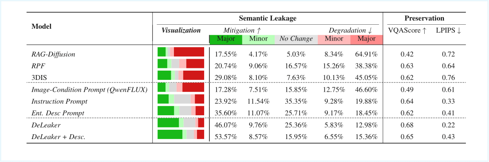
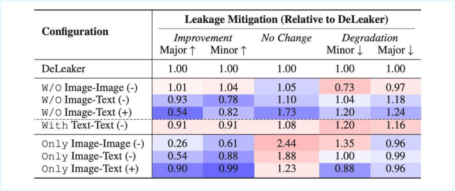
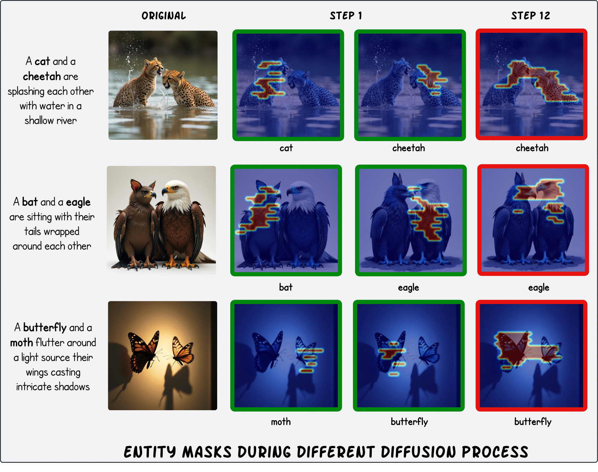
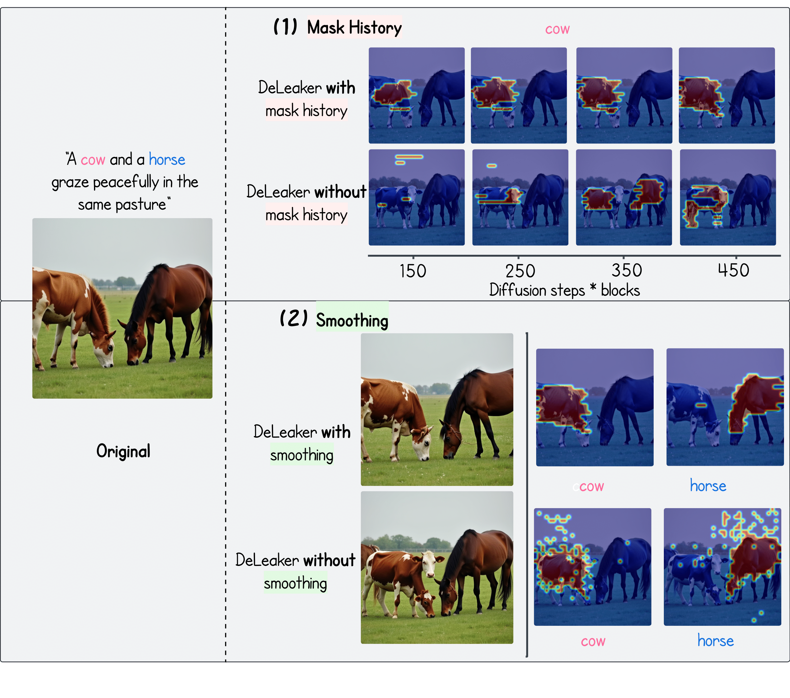

DeLeaker: Dynamic Inference-Time Reweighting For Semantic Leakge Mitigation In Text-to-Image Models
Abstract
Text-to-Image (T2I) models have advanced rapidly, yet they remain vulnerable to semantic leakage, the unintended transfer of semantically related features between distinct entities. Existing mitigation strategies are often optimization-based or dependent on external inputs. We introduce DeLeaker, a lightweight, optimization-free inference-time approach that mitigates leakage by directly intervening on the model’s attention maps. Throughout the diffusion process, DeLeaker dynamically reweights attention maps to suppress excessive cross-entity interactions while strengthening the identity of each entity. To support systematic evaluation, we introduce SLIM (Semantic Leakage in IMages), the first dataset dedicated to semantic leakage, comprising 1,130 human-verified samples spanning diverse scenarios, together with a novel automatic evaluation framework. Experiments demonstrate that DeLeaker consistently outperforms all baselines, even when they are provided with external information, achieving effective leakage mitigation without compromising fidelity or quality. These results underscore the value of attention control and pave the way for more semantically precise T2I models.
DeLeaker Scheme
🧠 DeLeaker Demo
Click an image to mitigate semantic leakage!
Original
DeLeaker
Original
DeLeaker
Original
DeLeaker
Original
DeLeaker
Original
DeLeaker
Original
DeLeaker

An overview of the automatic evaluation pipeline for assessing semantic leakage mitigation.

Qualitative comparison across five baselines (columns) and three examples (rows).

Automatic Evaluation Scores of Semantic Leakage Mitigation.

DeLeaker Component Ablation.

Entity masks are accurate even in the first diffusion step (50 blocks; green frame).

Ablation study of DeLeaker’s smoothing techniques on entity masks.
BibTeX
@article{ventura2025deleaker,
title={DeLeaker: Dynamic Inference-Time Reweighting For Semantic Leakage Mitigation in Text-to-Image Models},
author={Ventura, Mor and Toker, Michael and Patashnik, Or and Belinkov, Yonatan and Reichart, Roi},
journal={arXiv preprint arXiv:2510.15015},
year={2025}
}
}